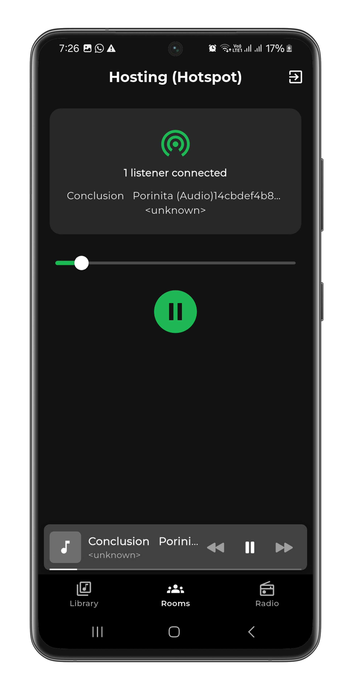
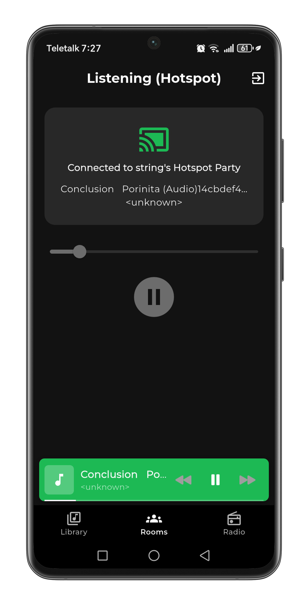

Nearby phones become one speaker
One phone turns on its hotspot, the others join it, and the song streams off that phone to all of them at the same second. Four phones playing the same track at once are four times the sound — a speaker you did not have to buy or carry. No internet, no data charge, and no pair of earphones to pass around.
Louder together
No internet
No earphones to split

